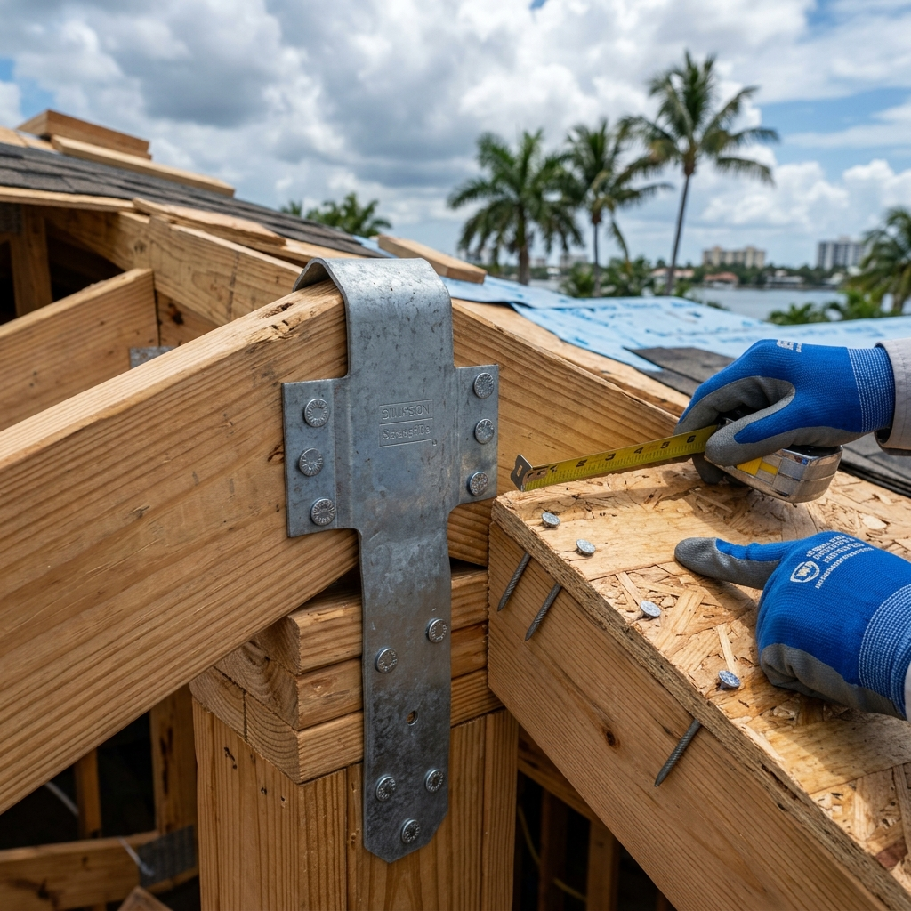

Fort Lauderdale homeowners can access up to $10,000 in state-funded grant assistance through the My Safe Florida Home program to strengthen their roofs against severe hurricane winds. Eligible properties receive a 2-to-1 matching grant where the state contributes up to two-thirds of the wind mitigation construction costs. Homeowners must complete an approved home wind inspection to qualify for these critical storm protection funds.

Why Are Florida Roofing Grants Essential for Broward County Homeowners?
South Florida experiences some of the most intense hurricane threats in the nation, making roof durability a critical safety and financial concern. Fort Lauderdale residents frequently face soaring home insurance premiums or outright policy cancellations if their roof coverings are older or lack modern wind-resistant features. Securing a state grant helps alleviate the financial burden of essential storm hardening. Upgrading your roof not only safeguards your family during severe weather but also secures your home's insurability and lowers annual premiums under strict Florida Building Code mandates.
What Is the Matching Grant Ratio for the My Safe Florida Home Program?
The program operates on a two-to-one matching formula, meaning the state provides two dollars for every single dollar you spend on approved wind mitigation upgrades. The maximum state contribution is capped at $10,000, which requires a personal investment of at least $5,000 to maximize the benefits. Low-income homeowners may qualify for up to $10,000 with no personal matching requirement, subject to current state budget allocations and criteria.
Which Specific Wind Mitigation Improvements Qualify for Funding?
Grant funds cannot be used for cosmetic roofing upgrades; they must directly improve the wind resistance of your home. Qualifying projects include installing secondary water barriers like self-adhering polymer modified bitumen underlayment, reinforcing roof-to-wall connections with hurricane clips, and securing roof deck attachments using ring-shank nails. Upgrading standard asphalt shingles to high-impact shingles or metal panels also qualifies if they meet the strict High Velocity Hurricane Zone requirements.
How Does the Inspection and Application Timeline Work?
Homeowners must first apply online through the official state portal to request a free, state-funded wind mitigation inspection. Once a certified inspector evaluates the property and provides a detailed report outlining recommended improvements, you can request estimates from approved contractors. After the state approves your grant application, the contracted work must be completed and pass a final post-construction inspection before reimbursement funds are released.
What Are the Licensure and Contractor Requirements to Receive Funds?
To receive your reimbursement, you must hire a contractor who is fully licensed by the state of Florida and registered with the grant program. Working with an unlicensed contractor or completing the physical labor yourself will completely void your grant eligibility and prevent reimbursement. Ensure your contractor holds an active Florida Certified Roofing Contractor license, such as CCC1329271, and carries appropriate liability and workers' compensation coverage.
How High Velocity Hurricane Zone Codes Impact Your Fort Lauderdale Roof
Fort Lauderdale is situated within the High Velocity Hurricane Zone, which dictates the most rigorous wind-resistance standards in the Florida Building Code. Any qualifying roof upgrade must withstand wind speeds exceeding 170 miles per hour, requiring robust materials and precise installation techniques. Broward County building permits must be fully closed, and all physical installations must be documented with photographic proof of underlayment fastening to satisfy both the state grant inspectors and your private insurance carrier.
Your Action Plan for Securing State Grant Funding in Broward County
- Apply for a Wind Inspection: Register on the official My Safe Florida Home portal and request your initial wind mitigation assessment.
- Review Your Official Report: Read the inspector's detailed list of recommended wind-hardening upgrades for your specific property.
- Obtain Quotes from Certified Professionals: Contact an authorized roofing contractor to receive detailed, code-compliant estimates that meet state standards.
- Submit Your Grant Application: Upload your chosen estimate to the state portal and await official approval before signing any construction contracts.
- Schedule a Professional Inspection: Request a detailed roof health assessment from a licensed local contractor like Planet Roofing to check for underlying wood rot before the state project begins.
- Complete the Work and Request Reimbursement: Have your registered contractor install the approved materials, pass the final state inspection, and submit all receipts for funding distribution.
Frequently Asked Questions
How much does a hurricane-hardened roof replacement cost in Fort Lauderdale?
A hurricane-resistant roof replacement in Broward County typically ranges from $12,000 to $28,000, depending on the house size and selected materials. While the state grant can reimburse up to $10,000 of this expense, homeowners should plan to cover the remaining balance out of pocket or utilize flexible financing options.
How long does the grant approval and roof installation process take?
The initial state application and wind inspection phase can take four to eight weeks, depending on state funding availability and application volume. Once the grant is approved and your licensed contractor receives the local permits, the actual physical roof replacement usually takes three to five days to complete.
Can you perform the storm hardening roofing work yourself to save money?
No, the state grant program strictly prohibits self-installed roofing work or DIY installations of any wind mitigation features. All qualifying upgrades must be completed by a licensed and insured Florida roofing contractor who is officially registered with the state portal to guarantee compliance with the High Velocity Hurricane Zone standards.
Does a grant-approved roof lower home insurance rates in Broward County?
Yes, installing qualifying storm mitigation features like secondary water barriers and hurricane straps significantly reduces your home insurance premium. Broward County homeowners frequently see insurance savings of 20% to 50% after submitting a certified post-installation wind mitigation report to their carriers.
Is Planet Roofing licensed to work on grant-approved projects?
Yes, Planet Roofing is a fully licensed and insured Florida contractor holding active state certifications CCC1329271 and CGC1517295. The team provides estimates and high-quality installations that align perfectly with the technical requirements of the My Safe Florida Home program.
Need Help With a Roofing Grant or Roof Replacement?
Protecting your home from the next major storm season requires a proactive approach and robust materials that meet South Florida's demanding wind standards. The experienced team at Planet Roofing is ready to help you navigate your roof replacement, providing accurate estimates and exceptional craftsmanship for Broward County properties. Contact us today to secure a free, no-pressure roof inspection and discuss how we can assist with your wind mitigation upgrades. Call our Fort Lauderdale office at (954) 600-1462 or fill out our online contact form to get started.